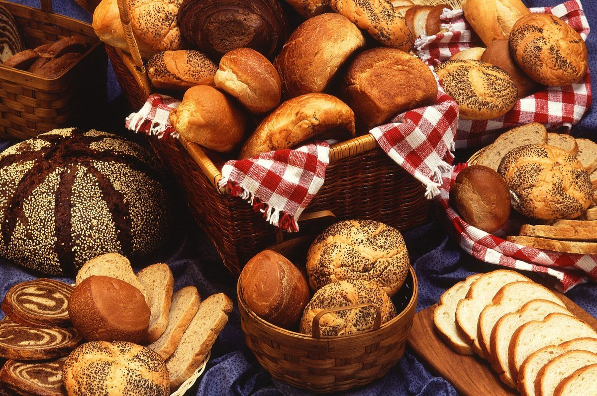

制作側の連想
「恋」の字から、心電図の用紙を思いついた
「恋野」という屋号の由来は分かりません。制作側は「恋」という字から、胸がどきっとする脈拍を連想し、心電図の記録紙のような赤い方眼と、P・Q・R・S・Tの五つの波でページをつくりました。パンのお店で、体や健康に関する意味づけはありません。制作側の連想で、お店の理念・由来とは無関係です。
五つの波で巡る
P・Q・R・S・T
写真のイメージ
焼き色を、五枚。
写真は実際のお店のものではありません。国外・撮影地不明のフリー素材です。



ご案内
お店のこと(確認できたものだけ)
| 所在地 | 〒399-5302 長野県木曽郡南木曽町吾妻844-3 |
|---|---|
| 電話 | 0264-24-0071 |
| 営業時間 | 準備中 |
| 定休日 | 準備中 |
| ご予約 | 準備中 |
| 駐車場 | 準備中 |
| SNS | Instagram @koino_bakery |